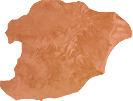
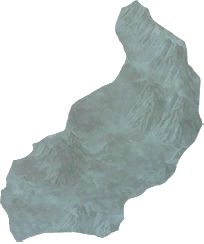
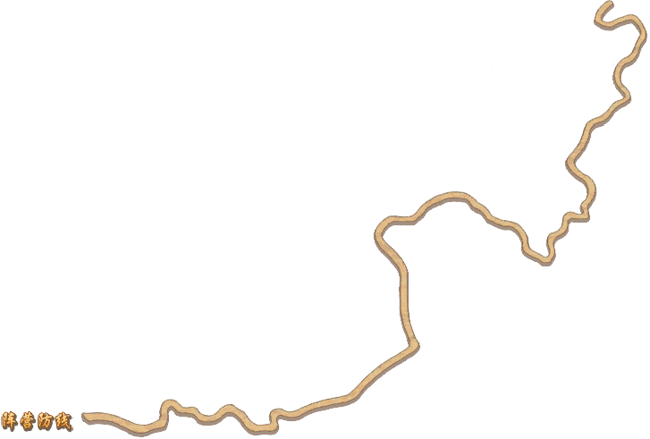
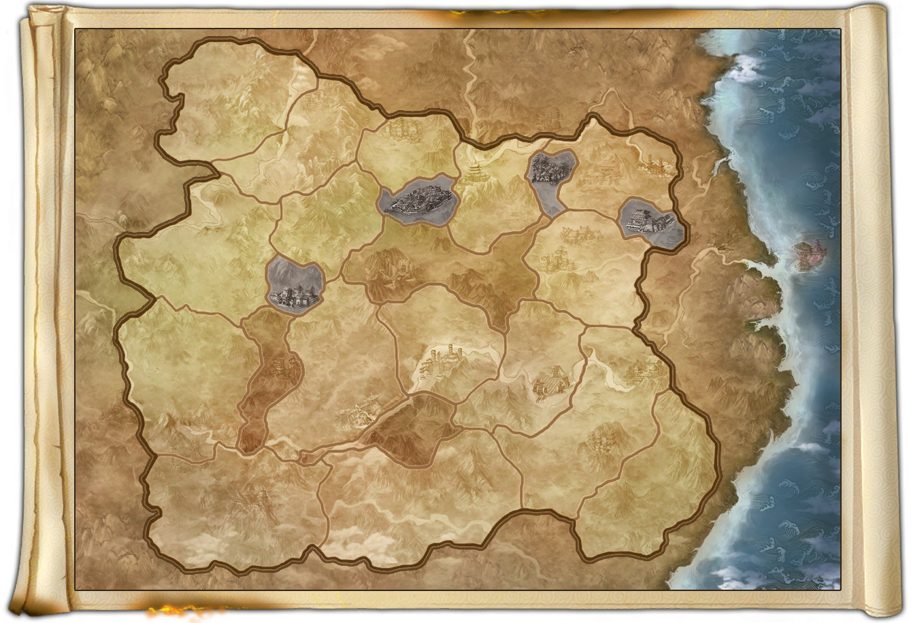

{{ server }}
{{ timestamp }}

恶人谷 }}_凛风堡.png)
 }}_凛风堡.png) 凛风堡
凛风堡 }}_神池岭.png)
 }}_02.png) 神池岭
神池岭 }}_烈日岗.png)
 }}_01.png) 烈日岗
烈日岗 }}_扶风郡.png)
 }}_01.png) 扶风郡
扶风郡 }}_世外坡.png)
 }}_05.png) 世外坡
世外坡 }}_飞沙关.png)
 }}_01.png) 飞沙关
飞沙关 }}_龙门镇.png)
 }}_02.png) 龙门镇
龙门镇 }}_凤鸣堡.png)
 }}_04.png) 凤鸣堡
凤鸣堡 }}_惊虬谷.png)
 }}_01.png) 惊虬谷
惊虬谷 }}_日月崖.png)
 }}_02.png) 日月崖
日月崖 }}_卧龙坡.png)
 }}_03.png) 卧龙坡
卧龙坡 }}_啖杏林.png)
 }}_01.png) 啖杏林
啖杏林 }}_枫湖寨.png)
 }}_03.png) 枫湖寨
枫湖寨 }}_不空关.png)
 }}_04.png) 不空关
不空关 }}_激流坞.png)
 }}_01.png) 激流坞
激流坞 }}_澜沧城.png)
 }}_03.png) 澜沧城
澜沧城 }}_霜戈堡.png)
 }}_01.png) 霜戈堡
霜戈堡 }}_金门关.png)
 }}_04.png) 金门关
金门关 }}_青云坞.png)
 }}_01.png) 青云坞
青云坞 }}_逐鹿坪.png)
 }}_03.png) 逐鹿坪
逐鹿坪 }}_盘龙坞.png)
 }}_05.png) 盘龙坞
盘龙坞 }}_千岩关.png)
 }}_01.png) 千岩关
千岩关 }}_大理山城.png)
 }}_04.png) 大理山城
大理山城 }}_秋雨堡.png)
 }}_01.png) 秋雨堡
秋雨堡 }}_红莲岗.png)
 }}_02.png) 红莲岗
红莲岗 }}_武王城.png)
 }}_武王城.png) 武王城
武王城
浩气盟


恶人谷凛风堡神池岭烈日岗扶风郡世外坡飞沙关龙门镇凤鸣堡惊虬谷日月崖卧龙坡啖杏林枫湖寨不空关激流坞澜沧城霜戈堡金门关青云坞逐鹿坪盘龙坞千岩关大理山城秋雨堡红莲岗武王城
浩气盟
